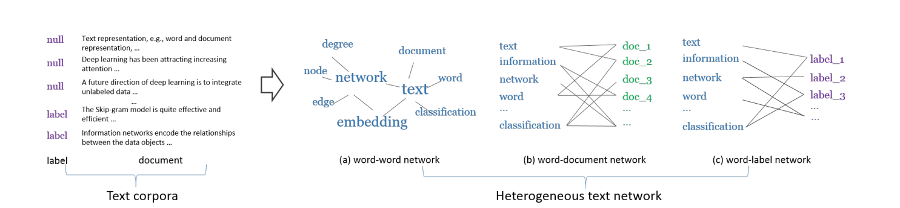
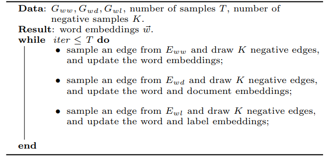

Introduction
Motivation
The text contains numerous effective and meaningful information for people. How to learn the meaning of words is a critical prerequisite for many machine learning tasks. Traditionally, people represent words independently to each other and represent each document as a "bag of words". However, the sparsity, polysemy, and synonymy of words and documents are commonly ignored during training.
One way to deal with it is by representing words and documents in low-dimensional spaces[1]. By the unsupervised learning process, the similar words and documents are embedded closely to each other. For example, Mikilov et al. proposed Skip-gram using the embedding of the target words to predict the embedding of individual context word in a local window. [1]. Compared with other classical approaches that utilize the distributional similarity of word contest, this text embedding approach is more efficient and easier to deploy[2].
However, compared with deep learning approaches such as convolutional neural networks (CNNs), the precision of text embedding method would be lower. This is because a method like CNNs leverage labeled information thus they can learn the representation of the data better. In other words, the unsupervised method would be generalizable for a different task but have weaker predictive power for a particular task[2]. However, compared with text embedding, CNNs training also has a drawback. It requires numerous parameters which is not only time consuming but also difficult to train an ideal model.
To sum up, text embedding methods are more efficient while deep learning neural networks are more predictive. How about using both supervised and unsupervised labels at the same time?
Project scope
In this project, we deploy Predictive Text Embedding (PTE), a semi-supervised representation learning method for text data to fill the gap between supervised and unsupervised labels. By learning from limited labeled examples and a large number of unlabelled examples, we obtain an effective low dimensional representation, which is the information between words and words, words and labels and words and documents.
We build two kinds of training data: one has a network encodes different levels of co-occurrence information between words and words while other does not. Then, we conduct experiments with sentiment data sets MR, short document data sets DBLP and long document data sets 20NG. Experimental results show that the data which has the word and word information outperform the data without this embedding information in various text classification tasks.
Methods
In semi-supervised sentence classification, to leverage both annotated data and unannotated text data, there are three steps in our method. We first build a heterogeneous graph whose edge consists of word-sentence, word-word, and word-label. Then we learn the embeddings of each vertex in the graph. Finally, we could use them as input of the text classification task. This framework is proposed by Tang et al..
The advantage of using this framework are two-fold. The first advantage is that this heterogeneous graph have both labels and words as its vertices. Thus, it can leverage the supervision information of the labels when learning word embeddings, which is more promising than self-supervised way to learning word embeddings like [1] . Another advantage is that we can incorporate as much unlabeled data in the graph, and the supervision information can flow to unlabeled words through label-word edges and word-word edges.
Building Heterogeneous Bipartite Graph
In the first step, we build word-word network, word-document network and word-label network. Word-word co-occurrence network, denoted as $G_{ww}=(\mathcal{V},E_{ww})$, captures the word co-occurrence information in local contexts of the unlabeled data. $\mathcal{V}$ is a vocabulary of words and $E_{ww}$ is the set of edges between words. The weight $w_{ij}$ of the edge between word $v_i$ and $v_j$ is defined as the number of times that the two words co-occur in the context windows of a given window size. Word-document etwork, denoted as $G_{wd}=(\mathcal{V} \cup \mathcal{D},E_{wd})$, is a bipartite network where $\mathcal{D}$ is a set of documents and $\mathcal{V}$ is a set of words. $E_{wd}$ is the set of edges between words and documents. The weight $w_{ij}$ between word $v_i$ and document $d_j$ is simply defined as the number of times $v_i$ appears in document $d_j$. Word-label network, denoted as $G_{wl}=(\mathcal{V} \cup \mathcal{L},E_{wl})$, is a bipartite network that captures category-level word co-occurrences. $\mathcal{L}$ is a set of class labels and $\mathcal{V}$ a set of words. $E_{wl}$ is a set of edges between words and classes. The weight $w_{ij}$ of the edge between word $v_i$ and class $c_j$ is defined as: $w_{ij}=\sum_{(d:l_d=j)} n_{di}$, where $n_{di}$ is the term frequency of word $v_i$ in document $d$, and $l_d$ is the class label of document $d$. Here is an example of these three kinds of bipartite network:
Learning Node Embeddings
Before introducing the second step of learning node embeddings, we first generally introduce the way of learning embeddings in bipartite network. Given a bipartite network $G=(\mathcal{V}_A \cup \mathcal{V}_B, E)$, where $\mathcal{V}_A$ and $\mathcal{V}_B$ are two disjoint sets of vertices of different types, and $E$ is the set of edges between them. We first define the conditional probability of vertex $v_i$ in set $\mathcal{V}_A$ generated by vertex $v_j$ in set $\mathcal{V}_B$ as: $$p(v_i|v_j)=\frac{\exp(\vec{u}_i^T\cdot \vec{u}_j)}{\sum_{i'\in A} \exp({\vec{u}_{i'}}^T \cdot \vec{u}_j)}$$ where $\vec{u}_i$ is the embedding vector of vertex $v_i$ in $\mathcal{V}_A$, and $\vec{u}_j$ is the embedding vector of vertex $v_j$ in $\mathcal{V}_B$. To preserve the second-order proximity, we can make the conditional distribution $p(\cdot|v_j)$ be close to its empirical distribution $\hat{p}(\cdot|v_j)$, which can be achieved by minimizing the following objective function: $$O=\sum_{j\in B} \lambda_j d(\hat{p}(\cdot|v_j), p(\cdot|v_j))$$ where $d(\cdot,\cdot)$ is the KL-divergence between two distributions, $\lambda_j$ is the importance of vertex $v_j$ in the network, which can be set as the degree $deg_j=\sum_i w_{ij}$, and the empirical distribution can be defined as $\hat{p}(v_i|v_j)=\frac{w_{ij}}{deg_j}$. Omitting some constants, the objective function can be calculated as: $$O=-\sum_{(i,j)\in E} w_{ij}\log p(v_j|v_i)$$ To learn the embeddings of our heterogeneous text network, we minimize the following objective function: $$O_{pte}= O_{ww}+O_{wd}+O_{wl}$$ where $$O_{ww}=-\sum_{(i,j)\in E_{ww}} w_{ij} \log p(v_i|v_j)$$ $$O_{wd}=-\sum_{(i,j)\in E_{wd}} w_{ij}\log p(v_i|d_j)$$ $$O_{wl}=-\sum_{(i,j)\in E_{wl}} w_{ij}\log p(v_i|l_j)$$ We use edge sampling and negtive sampling to jointly training the three oblective by stochastic gradient descent. Here is the procedure:
Classification Methods
In the third step, we use three kinds of classification algorithms to test the performance of our embeddings. For each algorithm, we use the embeddings trained with unlabled sentences and witout unlabeled sentences. We guess that the embeddings trained with unlabled sentences performs better, which show the effectiveness of PTE as a semi-supervised framework. We first use SVM and logistic regression as the classification algorithm. The input is the document embedding. Where a piece of text $d=w_1w_2\cdots,w_n$ iscomputed as $$\vec{d}=\frac{1}{n}\sum_{i=1}^n \vec{u}_i,$$ where $\vec{u}_i$ is the embedding of word $w_i$. In fact, the average of the word embeddings is the solution to minimizing the following objective function: $$O=\sum_{i=1}^{n} l(\vec{u}_i, \vec{d})$$ where the loss function $l(\cdot,\cdot)$ between the word embedding $\vec{u}_i$ and text embedding $\vec{d}$ is specified as the Euclidean distance. Then we use CNN as the classfier, where the input are word embeddings.
Text Classification Datasets
We use three text classification datasets to report the performance. One of them is long document, i.e. paragraph classification. Two of them are short documents, i.e. sentence classification. 20ng is a widely used long document classification data set 20newsgroup, containing 20 categories. Dblp which contains titles of papers from the computer science bibliography. There are six diverse research fields for classification including "database,'' "artificial intelligence'', "hardware'', "system'', "programming languages'' and "theory''. For each field, representative conferences are selected and the papers published in the selected conferences are collect ed as the labeled documents. This dataset is a short document classification task. Mr, a movie review data set, in which each review only contains one sentence and one of the two sentiment plority labels, i.e. positive or negtive . To test the performance in semi-supervised settings, in each data set, we not only use the whole labeled training set, but also use 12.5%, 25% and 50% labeled data respectively. The remaining training data is considered as unlabeled data.
Results
Results for DBLP dataset
We will be able to determine the approach with the best performance using the three datasets and the contribution of labeled and unlabeled data in semi-supervised learning to the final result, as well as the efficiency and the parameter used. Finally, we also present document visualizations to vividly illustrate our result. As seen in the following graph, we have separated the nodes into two classifications: text and label. There are six labels in the embedding, connecting the texts using yellow-ish lines. Among the $1.25$ million texts, we picked around $100$ texts to show what we have done, the link between which are colored steelblue.
Results for MR dataset
There are $600$ thousand words and only two labels in the MR dataset. We are able to pick $100$ of them to make a clear relationship out of them. Similar to DBLP dataset, we used yellow line to draw the word-label relationship and line in steelblue to draw the word-word relationship line.
Graph Convolutional Network Trial
Procedure
- Remove stop word: we remove the stop words and low-frequency words (conducted in the PTE preprocessing).
- Build graph: we build graphs by the network construction results in PTE model because in the PTE graph construction processing, we have three graphs: (1) word-word network (2) word-document network (3) word-label network; we can use the first two graphs to build a new graph where each node can be a word/document and an edge indicates the co-currence. To normalize it, we use TF-IDF instead. (For computing convenience, we directly use the text data.)
- Learn graph convolutional network: once a graph is built, we use the classical GCN learning method, where we only have two layers.
Evaluation
We compare PTE and GCN wby MR dataset with label ratio equal to 1. As we can see, GCN has a relatively higher F1 score. The reason is that GCN usually learns a better graph-structure representation than the embedding vector by PTE.
| PTE | GCN | |
|---|---|---|
| F1-micro/F1-macro | 0.74 | 0.76 |
Line charts comparison of Linear Regression, CNN and Support Vector Machine
- Different classification results:
As we can see in the result, SVM mainly beats LR and CNN in the metric of F1 micro/macro scores under this text classification task. The reason may be that SVM can better caputure the embedding space features and make a good prediction results. - Different label ratio results:
The result shows that with the percentage of the labeled data increasing (i.e., 0.125, 0.25, 0.5, 1), the F1 score increases accordingly. It is easy to interpret this finding since with more labeled data, we can learn a more precise model from the objective function. More labeled data indicates a bigger feature space that can be learned. - Different supervised learning setting: Semi-supervised advantage:
In the experiment, we also test the built graph under two kinds of dataset: (1) graph with only labeled data (2) graph with labeled and unlabeled data. As is shown in the result, the added unlabeled data can improve the F1 score. This is because when the unlabeled data is added in the graph construction process, a better word embedding is generated, leading to a higher F1 score of labeled+unlabel data than that of labeled data.
| F-MACRO | F-MICRO |
|---|---|
Scatter Plot of MR
There are two labels in the MR dataset. We used sklearn.manifold.TSNE by extracting the two main components from the dataset containing $0.6$ million texts and labels, thus better illustrating the idea of the embedding.
Scatter Plot of DBLP
There are six labels in the DBLP dataset. We used sklearn.manifold.TSNE by extracting the two main components from the dataset containing $1.25$ million texts and labels. To better illustrate the idea of the embedding, we added the functionality to choose among the labels to show. The label input accepts number inputs including number $1$ to $6$ and the graph is generated based on the input labels which by default is $123456$, i.e. including all the labels. (Please have patience as the graph is generated real-time, thus depending on your network and processor.)
Discussion
Conclusions
- PTE relates the unlabeled training data directly to the specific task, outperforming methods with pure supervised learning and those train word/semantic embedding separately. Our experiments support the result, and also show that the less labeled data we have, the more improvement we will obtain over pure supervised learning. In conclusion, we show in our experiments that PTE is well suited for task-specific feature extraction.
- Since PTE is a graph-based algorithm, utilizing GCN can further enhance the graph structure proposed in PTE. Our tests in GCN with methods proposed in Semi-Supervised Classification with Graph Convolutional Networks show that this method outperforms PTE.
Future work
- In the MR dataset, the semantic embeddings blend together even though there are only two classifications in dataset. We suspect this is because that some of key words like "but", "nevertheless" can change the sentiment of the text rapidly. Because of this nature of sentiment analysis task, we expect that attension mechanism will further improve our performance.
- Since we have different kinds of node in the graph we built: word, document, classification, we expect that techniques in Heterogeneous Graph Neural Network will improve our performance.
- GCN is a more generic and powerful framework for graph-based algorithm which has benn shown in our experiments. It is promising to deploy more advanced GCN training algorithm developed more recently.
References
- T. Mikolov, I. Sutskever, K. Chen, G. S. Corrado, and J. Dean. Distributed representations of words and phrases and their compositionality. In NIPS, pages 3111–3119, 2013.
- Jian Tang, Meng Qu, and Qiaozhu Mei. Pte: Predictive text embedding through large-scale heterogeneous textnetworks. InProceedings of the 21th ACM SIGKDD International Conference on Knowledge Discovery and DataMining, KDD ’15, pages 1165–1174, New York, NY, USA, 2015. ACM.
- Thomas N Kipf and Max Welling. Semi-supervised classification with graph convolutional networks.arXiv preprintarXiv:1609.02907, 2016.
- Liang Yao, Chengsheng Mao, and Yuan Luo. Graph convolutional networks for text classification. InProceedings ofthe AAAI Conference on Artificial Intelligence, volume 33, pages 7370–7377, 2019.